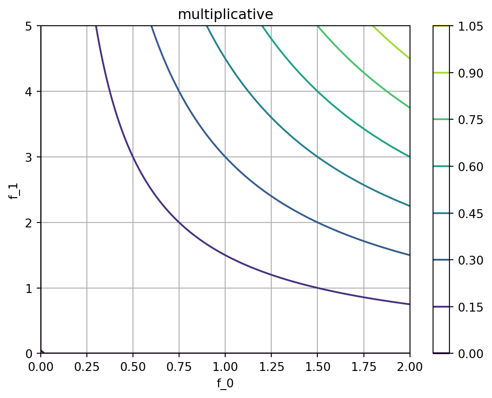
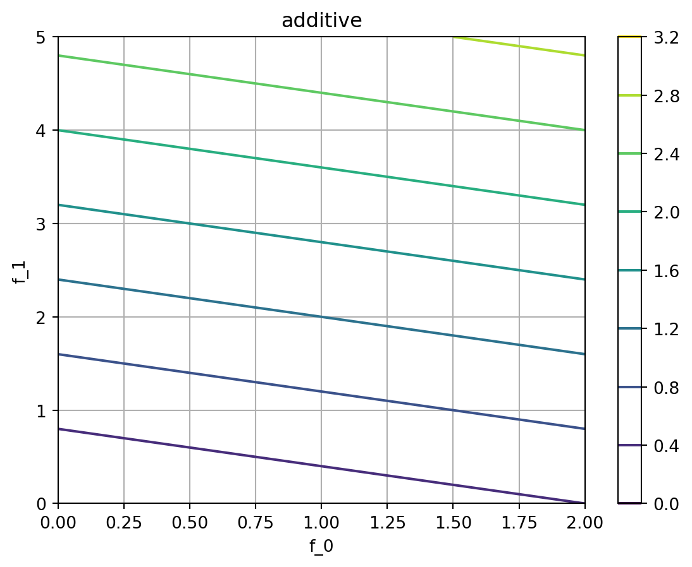
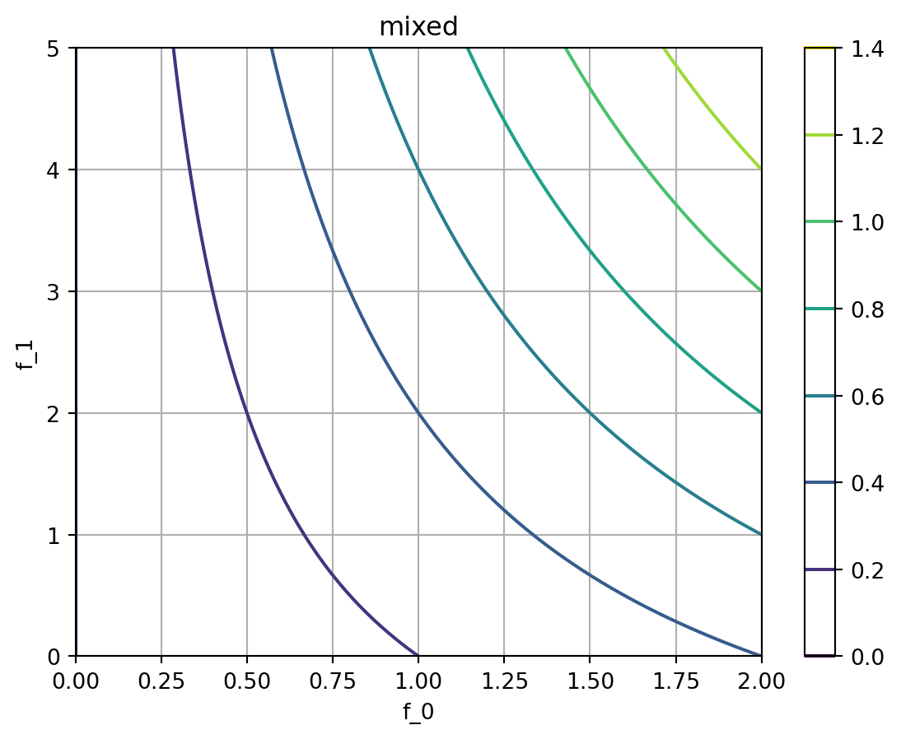

import matplotlib.pyplot as plt
import numpy as np
import torch
import bofire.strategies.api as strategies
from bofire.benchmarks.api import DTLZ2
from bofire.data_models.objectives import api as objectives_data_model
from bofire.data_models.strategies import api as strategies_data_modelMerging multiple objectives to a scalar target for single-target BO
Benchmark Problem
Only used for domain definition
bench = DTLZ2(dim=2, num_objectives=2)
experiments = bench.f(bench.domain.inputs.sample(10), return_complete=True)
domain = bench.domainChange the objectives: Multiplication, only reasonable for objectives > 0
outputs = domain.outputs.get_by_objective()
outputs[0].objective = objectives_data_model.MaximizeObjective(w=1.0, bounds=(0.0, 5.0))
outputs[1].objective = objectives_data_model.MaximizeObjective(w=1.0, bounds=(0.0, 2.0))
# outputs[1].objective = objectives_data_model.MaximizeSigmoidObjective(w = 0.5, tp=2.5, steepness=3.)Select Strategies
We will use pure multiplicative and additive Sobo strategies, as well as a mixed one for this example: - Multiplicative: \(f = f_0^{w_0} \cdot f_1^{w_1}\) - Additive: \(f = f_0 \cdot w_0 + f_1 \cdot w_1\) - Mixed (with f1 being the additive objective): \(f = f_0^{w_0} \cdot (1 + w_1 \cdot f_1)\)
strategy_data_model = {
"multiplicative": strategies_data_model.MultiplicativeSoboStrategy(domain=domain),
"additive": strategies_data_model.AdditiveSoboStrategy(domain=domain),
"mixed": strategies_data_model.MultiplicativeAdditiveSoboStrategy(
domain=domain, additive_features=["f_1"]
),
}We will now create the strategies and evaluate them on a grid to visualize the objectives.
We see the following: - Multiplicative: The objective is a product of the objectives: If either \(f_0\) or \(f_1\) is low, the objective is low. - Additive: The objective is a sum of the objectives: We see a linear increase in the objective with increasing \(f_0\) and \(f_1\). This is useful for complementary objectives. - Mixed: The objective is more strict w.r.t. \(f_0\) than the additive objective \(f_1\). The overall desirability can also be high, if \(f_1\) is low.
Changing the weights \(w_i\) in the objectives above will further change the preference of \(f_0\) and \(f_1\).
# map from the strategy data-model to the actual strategy object instances
strategy = {
key: strategies.map(strategy_data_model)
for (key, strategy_data_model) in strategy_data_model.items()
}# tell the strategies about the experiments. This is required to set up the models, but not for the objective evaluation
for _, strat in strategy.items():
strat.tell(experiments)# get the objectives for evaluation as a torch executable
objectives = {
key: strategy._get_objective_and_constraints()[0]
for (key, strategy) in strategy.items()
}# f_0 / f_1 coordinates for objctive evaluation
mesh = np.meshgrid(np.linspace(0, 2, 100), np.linspace(0, 5, 100))
# transform to matrix-form torch tensor
mesh_tensor = torch.tensor([m.flatten() for m in mesh]).T/tmp/ipykernel_2787/1215888523.py:4: UserWarning:
Creating a tensor from a list of numpy.ndarrays is extremely slow. Please consider converting the list to a single numpy.ndarray with numpy.array() before converting to a tensor. (Triggered internally at /pytorch/torch/csrc/utils/tensor_new.cpp:253.)
# evaluate objectives
objectives_eval = {
key: obj(mesh_tensor).detach().numpy().reshape(mesh[0].shape)
for (key, obj) in objectives.items()
}# plot the objectives as contour plots
for key, obj in objectives_eval.items():
plt.figure()
plt.contour(*mesh, obj, label=key)
plt.title(key)
plt.xlabel("f_0")
plt.ylabel("f_1")
plt.grid(True)
plt.colorbar()
plt.show()/tmp/ipykernel_2787/261754645.py:4: UserWarning:
The following kwargs were not used by contour: 'label'


